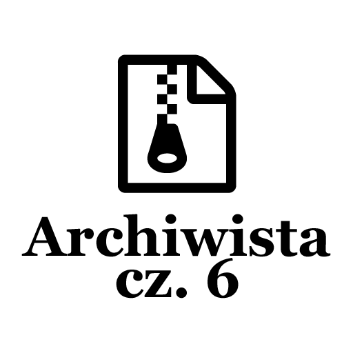
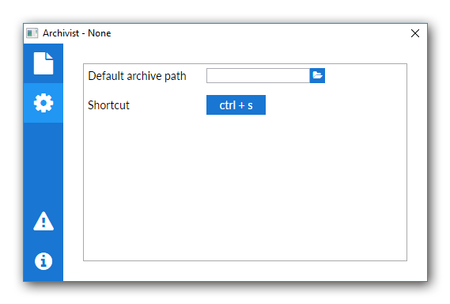
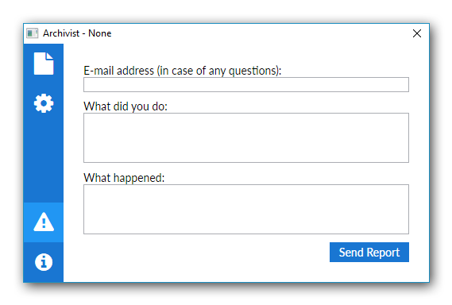
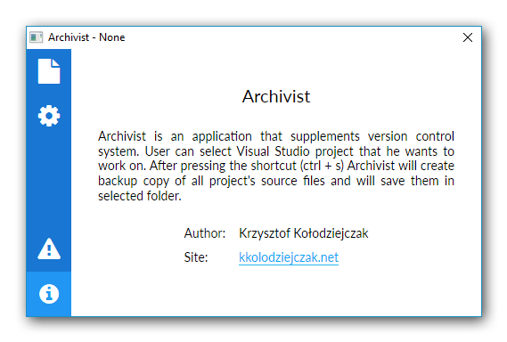

Post archive
Archiwista [cz. 6 - Dokończenie wyglądu aplikacji]

Pozostały trzy strony do stworzenia: ustawienia, raport oraz informacje. Strony te nie należą do bardzo zaawansowanych, więc powinienem je skończyć już w tym wpisie. Dzięki temu będę mógł zacząć implementować logikę aplikacji i zacząć korzystać z gotowego produktu na co dzień.
Ustawienia
Strona zawierająca ustawienia posiadają dwa parametry, w których użytkownik może ustawić domyślną ścieżkę do archiwów oraz może dokonać wyboru skrótu, który będzie rozpoczynał proces tworzenia kopii. Obecnie wpisy są tworzone na sztywno za pomocą XAML, w przyszłości chciałbym stworzyć coś w miarę dynamicznego. Trzeba jednak być świadomym, że robienie czegoś „na zapas” nie ma sensu, ponieważ istnieje możliwość, że napisana funkcjonalność nigdy nie zostanie użyta. Jeżeli jednak pojawi się więcej parametrów, które użytkownik będzie mógł ustawić, to na pewno rozwinę proces dodawania ustawień.

Zgłaszanie błędów
Błędy w aplikacji są nie do uniknięcia, dlatego postanowiłem dodać możliwość wysyłania raportów poprzez prosty formularz. Dzięki temu użytkownicy będą mogli zgłaszać błędy bezpośrednio z poziomu aplikacji. Inną rzeczą, na którą trzeba zwrócić uwagę jest sposób przesyłania raportów. Jednymi z łatwiejszych sposobów będzie wysłanie wiadomości e-mail na zbiorczy adres e-mail. Innym pomysłem jest dodawanie rekordów do bazy danych na koncie z ograniczonym dostępem do bazy danych. Kolejnym możliwym rozwiązaniem jest utworzenie API, do którego można byłoby wysyłać zapytania. Niestety to rozwiązanie niesie za sobą konieczność posiadania serwera. Decyzję podejmę, kiedy przyjdzie czas na implementację tej funkcjonalności.

Informacje
Według mnie każda aplikacja powinna zawierać informacje o samej aplikacji, numer wersji, krótki opis oraz informacje o jej autorze. W ramach tej strony został stworzony nowy styl przycisku, który wygląda jak hiperłącze sugerujące, otworzenie strony po jego naciśnięciu.

Kończąc
Wygląd aplikacji jest już skończony, drobne poprawki będą robione podczas implementacji logiki aplikacji. Kiedyś w planach mam odwiedzenie wyglądu aplikacji i jego optymalizację. Wraz z używaniem aplikacji na pewno pojawi się wiele pomysłów na jej ulepszenie.
Cały kod aplikacji można zobaczyć na moim koncie github [icon name="github" size="lg"] /kkolodziejczak/Archivist